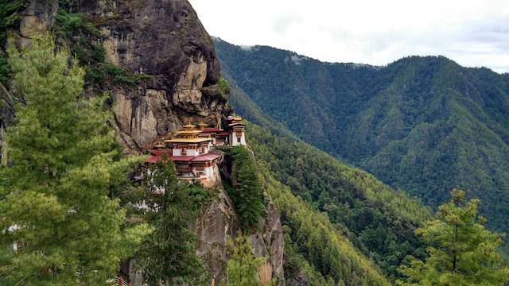
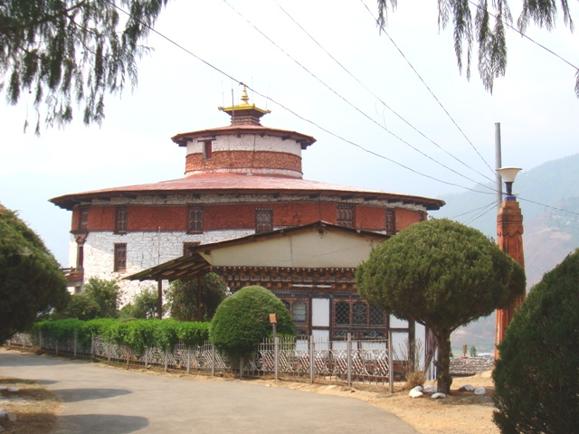
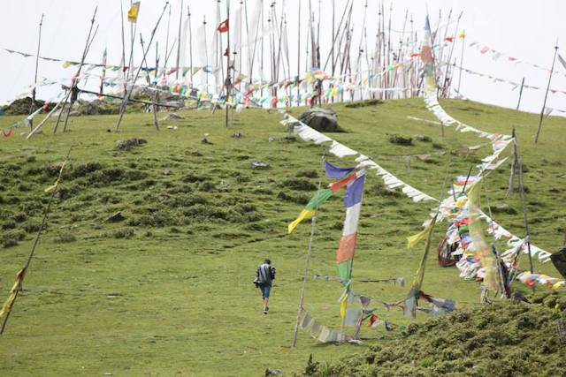

Paro
Paro is one of the districts located at the western part of Bhutan. It is also home to Bhutan's only international airport. It is home to the following places of interest to tourists:
- Taktsang:
- Bumdra Monastry Trek:
- National Museum of Bhutan:
- Drive to Chelela Pass:
Taktsang (Tiger's Nest) is a Buddhist temple located in Paro. It is situated on a sheer cliff face 900 meters above the valley. A buddhist master named Guru Rimpoche meditated in a cave in 7th century AD and the first temple was built around this cave in 1692.
To visit Taktsang, visitors drive for 20 mintutes from Paro town till the base of the cliff and then hike for 2-3 hours through pine forest.
Bumdra (Cave of Thousand Prayers) Monastry is another Buddhist site which is located high up in the alpine areas of Paro. Tourists do the two days trek from Paro to Bumdra and back. The trek runs through beautiful forests, alpine meadows and other tourist sites.
The national museum is housed in a ancient watch tower which was built in 1649 AD. The museum exhibits the rich artefacts of Bhutan from as early as 4000 BC to this day. It also conducts symposiums and publishes research findings.
The vising hours for national museum is 9:00 AM - 5:00 PM (April - October) and 9:00 AM to 4:00 PM (November - March).
Chelela is a mountain pass located between the two districts of Paro and Haa. at 3180 meters above sea level, it is one of the highest motorable mountain pass in Bhutan. The 35 kilometer drive from Paro to Chelela is an opportunity for tourists to experience the range of vegetation in Bhutan. It starts from the valley filled with oak and willow, goes through pine forest, then into spruce and larch forest and at the summit visitors will be welcomed by alpine meadows filled with flowers (during summer) or ice and snow (during winter) and colorful prayerflags.
